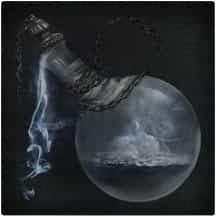
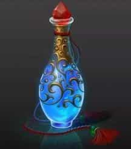
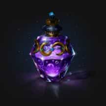
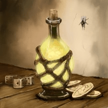
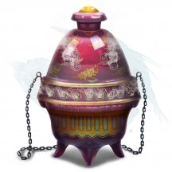
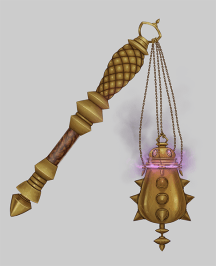
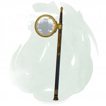
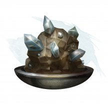
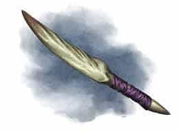
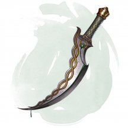

- Чудесный предмет, редкий (требуется настройка кем-то, кто назначен Публичным Лордом Глубоководья)
- Рекомендованная стоимость: 501-5 000 зм
Жетон Дозора дается лишь тем, кто заслужил доверие Публичного Лорда Глубоководья. На жетоне, подтверждающем ранг капитана Городского Дозора Глубоководья, изображён герб города.
Если вы носите этот жетон и не используете щит, то получаете +2 бонус к КД.
Если жетон дольше минуты лежит дальше 5 футов от вас, то он исчезает и появляется на поверхности в пределах 5 футов рядом с Публичным Лордом. Пока Лорд держит жетон, он знает ваше местоположение, при условии, что вы оба находитесь на одном и том же плане существования и ваша настройка на жетон ещё не закончилась.
Публичный Лорд может действием прикоснуться к жетону и закончить вашу настройку на этом предмете.
Магические предметы
Официальные материалы от Wizards of the Coast и от издательств, поддерживаемых этой компанией.
- Зелье, редкое
- Рекомендованная стоимость: 251-2 500 зм
Выпивая это зелье, вы превращаетесь в живой сгусток воды. Вы возвращаетесь к своей истинной форме через 10 минут, а также если вы оказываетесь недееспособны или умираете.
Находясь в этой форме, вы получаете следующие преимущества:
Движение жидкости. Вы получаете скорость плавания 30 футов. Вы можете перемещаться по другим жидкостям или через них, а также можете входить в пространство других существ и останавливаться там. Вы получаете способность вырастать до своего нормального роста и можете проходить через Крошечные отверстия. Вы гасите немагическое пламя в любом пространстве, в которое входите.
Водное сопротивление. Вы получаете сопротивление немагическому урону. Также вы совершаете с преимуществом спасброски Силы, Ловкости и Телосложения.
Ограничения. Вы не можете говорить, атаковать, накладывать заклинания или активировать магические предметы. Любые предметы, которые вы несли или носили, сливаются с вами в вашей новой форме и становятся недоступными, хоть на вас продолжает влиять всё, что вы носите, например, доспех.

- Зелье, редкое
- Рекомендованная стоимость: 251-2 500 зм
Когда вы выпиваете это зелье, вы получаете эффект заклинания газообразная форма [gaseous form] (концентрация не требуется) на 1 час, или пока вы бонусным действием не прервёте его. Пузырёк с этим зельем как будто содержит туман, перетекающий, словно вода.

- Зелье, редкое
- Рекомендованная стоимость: 251-2 500 зм
После того, как вы выпили это зелье, вы на 1 час получаете 10 временных хитов. Кроме того, в течение этого часа вы находитесь под эффектом заклинания благословение [bless] (концентрация не требуется). Это синее зелье пузырится и парит, словно оно находится в состоянии закипания.
- Зелье, редкое
- Рекомендованная стоимость: 501-5 000 зм
В течение 1 минуты после того как вы выпили это зелье, впервые, когда вы используете заклинание 4-го уровня или ниже, наносящее урон, вместо того чтобы бросать кости для определения нанесённого урона, вы можете использовать максимально возможный результат для каждой кости.
Эта светящаяся фиолетовая жидкость пахнет сахаром и сливой, но имеет илистый привкус.

- Зелье, редкое
- Рекомендованная стоимость: 251-2 500 зм
В течение 1 минуты после того, как вы выпили это зелье, вы обладаете сопротивлением урону всех видов. Это густое как сироп зелье выглядит как расплавленное железо.
- Зелье, редкое
- Рекомендованная стоимость: 251-2 500 зм
Когда вы выпиваете это зелье, вы получаете на 1к4 часа эффект «уменьшение» заклинания увеличение/ уменьшение [enlarge/reduce](концентрация не требуется). Маленький красный шарик в этой жидкости непрерывно сжимается до размера бусины и тут же расширяется, окрашивая прозрачную жидкость вокруг, после чего сжимается вновь. Тряска пузырька не прерывает этот процесс.

- Зелье, редкое
- Рекомендованная стоимость: 251-2 500 зм
Когда вы выпиваете это зелье, вы получаете эффект заклинания обнаружение мыслей [detect thoughts] (Сл спасброска 13). На вид это густое, фиолетовое зелье, с плавающим в нём небольшим овальным облачком.

- Зелье, редкое
- Рекомендованная стоимость: 251-2 500 зм
Выпив это зелье, вы получаете эффект заклинания подсматривание [clairvoyance]. В желтоватой жидкости зелья плавают глазные яблоки, но они исчезают, когда пузырёк открывают.
- Чудесный предмет, редкий
- Рекомендованная стоимость: 501-5 000 зм
Владелец этого платинового маленького зеркала может узнать кое-что об истории конкретного объекта или существа, Действием вы можете взглянуть в зеркало и подумать о цели. Вместо отражения владельца зеркало отобразит сцены из прошлого цели. Передаваемая информация точна, но она случайна и загадочна, и представлена в произвольном порядке. После активации зеркало демонстрирует информацию в течение 1 минуты или меньше, после чего возвращается в нормальное состояние. Оно не может быть использовано снова до следующего рассвета.
- Оружие (длинный меч), редкое
- Рекомендованная стоимость: 501-5 000 зм
Этот магический меч с одной режущей кромкой сделан из заточенного клыка гигантской змеи. Его рукоять меняет форму, чтобы приспособиться к хвату любого существа, которое использует его. Оружие наносит дополнительно 1к10 урона ядом любой цели, по которой попадёт.
- Чудесный предмет, редкий (требуется настройка)
- Рекомендованная стоимость: 501-5 000 зм
Сшитое из толстой, красной ткани, это знамя имеет 5 футов длины и 3 фута ширины. Руна Криг (война) изображена на полотне с нашитыми круглыми, металлическими пластинами. Знамя можно прикрепить к 10-футовой жерди и использовать как штандарт.
Сворачивание или разворачивание знамени требует потратить действие. Знамя обладает следующими свойствами.
Метка Смелости. Бонусным действием вы можете коснуться развёрнутого знамени, чтобы создать волну смелости. Вы и ваши союзники получают иммунитет к состоянию испуган, пока находятся в 20 футах от знамени. Этот эффект длится 10 минут или пока знамя не будет свёрнуто. Как только вы воспользуетесь этим свойством, вы не можете им более воспользоваться пока не совершите короткий или продолжительный отдых.
Охранный Штандарт. Вы можете видеть невидимых существ пока они находятся в 20 футах от развёрнутого знамени и на линии видимости для вас.
Щит Штандарта. Бонусным действием вы можете коснуться развёрнутого знамени, чтобы пробудить его силу. Любая дальнобойная атака, которая нацелена на вас или ваших союзников в пределах 20 футов от знамени проходит с помехой. Этот эффект длится 1 минуту или пока знамя не будет свёрнуто.
Как только вы воспользуетесь этим свойством, вы не можете им более воспользоваться пока не совершите короткий или продолжительный отдых.
Дар Битвы. Вы можете перенести магию знамени в другое место нарисовав руну Криг на земле пальцем. Это место становится центром сферической области магии, радиусом 500 футов, закреплённой за этим местом. Перенос требует 8 часов работы, и чтобы знамя находилось в 5 футах от вас. Во время работы вы выбираете существ, типы существ или и то, и другое, на которых будет действовать магия знамени. В конце этого ритуала, знамя уничтожается, а область получает следующие свойства:
- Пока они находятся в сфере 500 футового радиуса, существа, которые были определены во время процесса переноса иммунны к состоянию испуган и получают бонус +1 к КД и на броски атаки.
- Оружие (кинжал), редкое (требуется настройка)
- Рекомендованная стоимость: 501-5 000 зм
Это оружие является магическим кинжалом, замаскированным под швейную иглу. Пока вы его держите, вы можете бонусным действием произнести командное слово, превращая его в кинжал или обратно в иглу.
Вы получаете бонус +1 к броскам атаки и урона, совершённым этим кинжалом. Держа его, вы можете с его помощью действием наложить заговор починка [mending].

- Чудесный предмет, редкий
- Рекомендованная стоимость: 501-5 000 зм
Если в этом кадиле горит благовоние, вы можете действием произнести командное слово и призвать воздушного элементаля [air elemental], как если бы наложили заклинание призыв элементаля [conjure elemental]. Кадило нельзя использовать повторно, пока не наступит следующий рассвет.
Этот сосуд 6 дюймов шириной и 1 фут высотой напоминает чашу с декорированной крышкой. Весит кадило 1 фунт.

- Оружие (цеп), редкое (требуется настройка жрецом или паладином)
- Рекомендованная стоимость: 501-5 000 зм
Закруглённое навершие этого цепа имеет множество крошечных отверстий, расположенных в виде символов и узоров. Цеп считается для вас священным символом. Когда вы попадаете атакой, используя этот магический цеп, цель получает дополнительно 1к8 урона излучением.
Бонусным действием вы можете произнести командное слово, чтобы заставить цеп испускать прозрачное облако ладана в радиусе 10 футов в течение 1 минуты. В начале каждого вашего хода вы и любые другие существа в этом облаке ладана восстанавливаете 1к4 хитов. Это свойство не может быть использовано вновь до следующего рассвета.

- Чудесный предмет, редкий (требуется настройка)
- Рекомендованная стоимость: 501-5 000 зм
У этого драгоценного камня есть 3 заряда. Вы можете действием произнести командное слово и потратить 1 заряд. В течение следующих 10 минут вы обладаете истинным зрением в пределах 120 футов, если смотрите через этот драгоценный камень.
Камень ежедневно восстанавливает 1к3 заряда на рассвете.

- Чудесный предмет, редкий
- Рекомендованная стоимость: 501-5 000 зм
Если этот камень касается пола, вы можете действием произнести командное слово и призвать земляного элементаля [earth elemental], как если бы вы наложили заклинание призыв элементаля [conjure elemental]. После этого камень нельзя повторно использовать до следующего рассвета. Весит камень 5 фунтов.
- Чудесный предмет, редкий (требуется настройка)
- Рекомендованная стоимость: 501-5 000 зм
Внутри этого бриллианта видна капля крови какого-то существа в виде руны Блод (кровь).
Пока эта вещь с вами, вы можете действием прорицать местонахождение ближайшего существа (не нежити), связанного с кровью в предмете. Вы чувствуете расстояние и направление до существа относительно своего положения. Это либо то существо, чья кровь заключена в предмете, либо его кровный родственник.
Этот предмет сделан из большого бриллианта, ценой не менее 5000 зм. Когда его обливают кровью существа во время процесса создания, она впитывается в камень, проникая в самое его сердце. Если камень будет уничтожен, кровь испаряется и пропадает навсегда. Мстительное существо может использовать камень с руной Блод, чтобы выследить всю кровную родословную. Такие камни часто служат семейными подарками или передаются как наследие отцов детям.

- Оружие (кинжал), редкое
- Рекомендованная стоимость: 501-5 000 зм
Кинжал выполнен из драконьего зуба. Клинком служит клык или зуб хищника, а рукоять представляет собой обмотанный кожей корень зуба. Гарда отсутствует.
Вы получаете бонус +1 на броски атаки и урона, проводимые этим оружием. При попадании этим оружием, цель получает дополнительный урон кислотой 1к6.
Мощь дракона. Против врагов Культа Дракона, бонус кинжала на броски атаки и урона повышается до +2, и дополнительный урон кислотой возрастает до 2к6.
- Оружие (кинжал), редкое (требуется настройка)
- Рекомендованная стоимость: 501-5 000 зм
Этот редкий магический предмет требует настройки. Настроившееся на него существо получает слепое зрение на расстоянии 30 футов. В рукоять кинжала с пилообразным лезвием вставлена чёрная жемчужина.

- Оружие (кинжал), редкое
- Рекомендованная стоимость: 501-5 000 зм
Вы получаете бонус +1 к броскам атаки и урона, совершённым этим магическим оружием.
Вы можете действием заставить этот клинок покрыться густым чёрным ядом. Яд остаётся 1 минуту, или пока атака этим оружием не попадёт по существу. Цель должна преуспеть в спасброске Телосложения Сл 15, иначе она получит урон ядом 2к10 и станет отравленной на 1 минуту. Вы не можете использовать повторно это свойство до следующего рассвета.
- Доспех (кираса), редкий (требуется настройка)
- Рекомендованная стоимость: 501-5 000 зм
Эта полированная медная кираса выглядит так, как будто она сделана из взаимосвязанных шестерен. На груди красуются весы торговца.
Доспехи имеют 4 зарядов. Пока вы носите эти доспехи, заряды можно использовать следующими способами:
Уравнять. Когда вы или существо, которое вы можете видеть в пределах 60 футов, собираетесь совершить бросок к20 с преимуществом или помехой, вы можете потратить 1 заряд, и совершить реакцию заставив совершить этот бросок без преимущества и помехи.
Устранить дисбаланс. Бонусным действием вы можете потратить 2 заряда, чтобы наложить заклинание малое восстановление [lesser restoration] из этих доспехов.
Доспехи восстанавливают 1к4 израсходованных зарядов ежедневно на рассвете.
- Оружие (любой меч), редкое (требуется настройка)
- Рекомендованная стоимость: 501-5 000 зм
Чёрное лезвие этого меча изготовлено из таинственного магического сплава. Вы получаете бонус +1 к броскам атаки и урона, совершённым этим магическим оружием. Пока меч находится у вас, вы невосприимчивы к эффектам, обращающим в нежить.
Темное благословение. Держа меч, действием вы можете даровать себе 1к4 + 4 временных хита. Это свойство не может быть использовано снова до следующих сумерек.
Удручающая атака. Когда вы попадаете по существу атакой совершенной этим оружием, вы можете наполнить сердце цели беспокойством: она получает помеху на следующий спасбросок, который она совершит до конца вашего следующего хода. Существо игнорирует этот эффект, если оно невосприимчиво к состоянию испуган. Как только вы воспользуетесь этим свойством, вы не можете использовать повторно это свойство до следующих сумерек.
- Оружие (любой меч), редкое (требуется настройка)
- Рекомендованная стоимость: 501-5 000 зм
Выберите магический бонус от +1 до +3. Этот меч получает данный бонус к броскам атаки и урона. За каждое очко бонуса, которое вы выбираете для меча, вы получаете соответствующий штраф (от -1 до -3) к вашим спасброскам от смерти. Вы можете менять этот магический бонус каждый день на рассвете.
Проклятие. Это оружие проклято, и настройка на него распространяет проклятие на вас. Пока проклятие не будет снято заклинанием снятие проклятия [remove curse] или подобной магией, вы не желаете расставаться с этим оружием.
- Оружие (любой меч), редкое (требуется настройка конкретным индивидом)
- Рекомендованная стоимость: 501-5 000 зм
Свежеватели разума [mind flayer] могут превратить любой немагический меч в клинок разума. Только одно существо может на него настроиться: либо конкретный свежеватель разума, либо один из их рабов.
В руках любого другого существа клинок разума действует как обычный меч своего типа. В руках предназначенного ему владельца клинок разума становится магическим оружием и дополнительно наносит 2к6 урона психической энергией любой цели, по которой ударит.